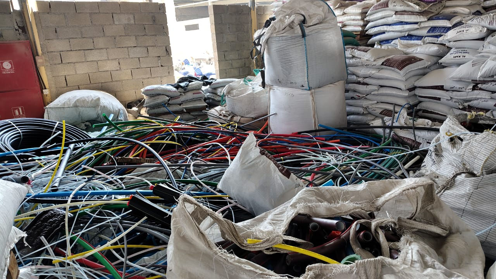
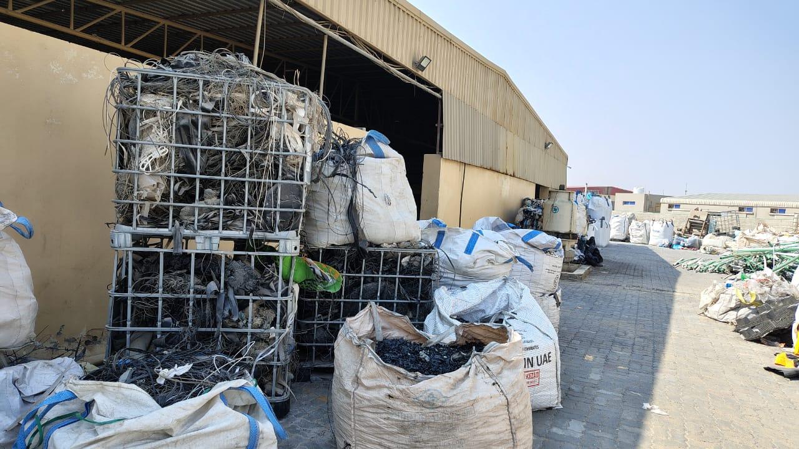
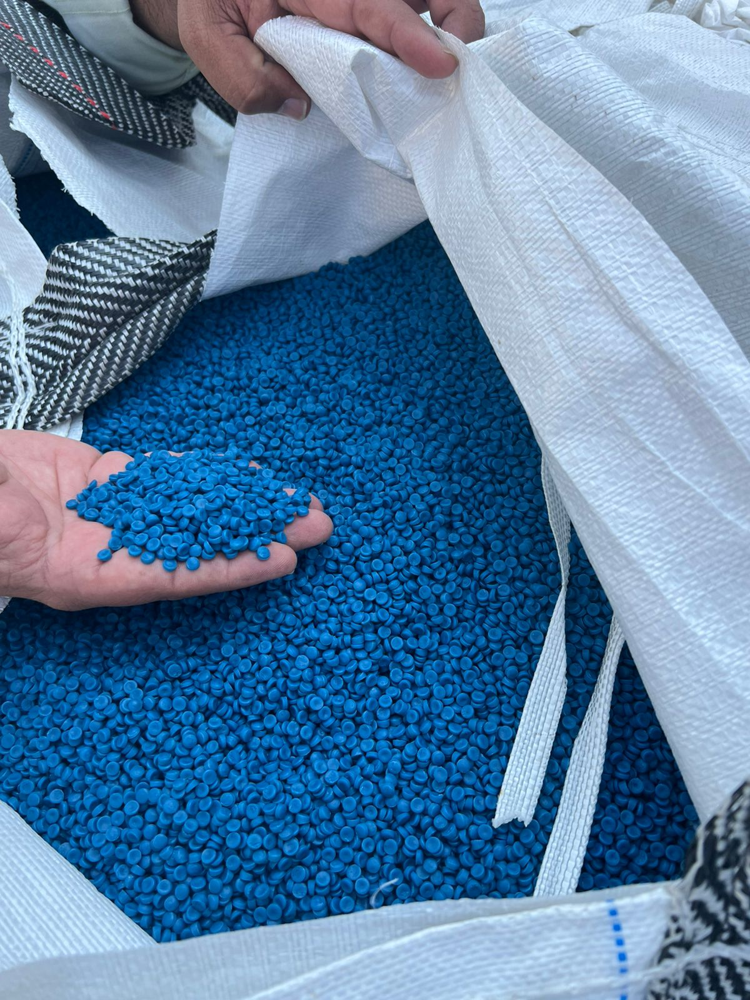

Market Entry & GTM Strategy for an E-Waste Recycling Startup
E-waste is a regulated market masquerading as an impact opportunity. The startup had the technology and the credentials. What it needed was a commercial map – who would pay, how much, and how to structure the first contract in a market shaped as much by compliance as by choice.
The Situation
Strong technology. A clear impact narrative. But no structured commercial model for the B2B market.
An e-waste recycling startup had built a technically robust processing capability – able to handle a wide range of consumer electronics and corporate IT equipment waste – with genuine environmental credentials. The founders had impact-led branding and were getting inbound interest from sustainability teams at large enterprises. But interest was not converting to contracts.
The core problem was that India's e-waste market is fundamentally driven by regulatory obligation, not just voluntary sustainability commitment. The E-Waste (Management) Rules place statutory channelisation responsibilities on OEMs, retailers, and large enterprises – creating a captive B2B market that the startup hadn't yet learned to navigate commercially.
GreyRadius was engaged to build a commercial market entry strategy – mapping the regulatory landscape, identifying the B2B buyer segments with the highest compliance urgency, sizing the addressable market, and structuring a pilot partnership model that could close the first institutional contracts.
Engagement at a glance
Client
E-waste recycling startup, India
Service
GTM Execution-as-a-Service · Opportunity Assessment
Regulatory scope
E-Waste Management Rules; EPR obligations; state-level variation
Buyer segments
OEMs, large enterprises, IT asset disposals, retailers
Impact credentials open conversations. Regulatory intelligence closes contracts.
Complex regulatory structure
India's E-Waste (Management) Rules create Extended Producer Responsibility (EPR) obligations – but the specific obligations, compliance deadlines, and enforcement intensity vary by buyer category, product type, and state. Without a structured regulatory map, the startup couldn't identify which buyers had the most urgent compliance pressure and therefore the highest purchase readiness.
Voluntary vs. compliance-driven demand
Many enterprises that expressed interest in e-waste recycling services were doing so as a CSR or sustainability initiative – with no urgency and no formal budget. The buyers with real commercial urgency were those with regulatory obligations and enforcement exposure. Distinguishing between the two types of buyer was essential for GTM prioritisation.
First contract structure
E-waste processing contracts for institutional buyers have specific requirements: volume commitments, data security protocols for IT equipment, chain-of-custody documentation, and CPCB compliance certificates. The startup had the processing capability but hadn't yet structured its commercial offering in a format that institutional procurement teams could approve.
Regulatory mapping. Buyer segmentation by compliance urgency. A pilot model structured for institutional procurement.
Regulatory pathway mapping
Mapped three regulatory pathways through which B2B buyers engage certified e-waste recyclers – EPR obligations for OEMs and producers, IT asset disposal requirements for large enterprises under data protection and environmental rules, and voluntary corporate sustainability programmes with formalised environmental reporting. For each pathway, documented the specific compliance trigger, documentation requirement, and enforcement context that created commercial urgency.
B2B buyer segmentation & prioritisation
Identified and characterised four B2B buyer segments – OEMs with EPR obligations, large IT enterprises disposing of retired hardware, retail chains with point-of-sale collection requirements, and financial institutions with data-secure disposal needs. Scored each segment on compliance urgency, volume potential, contract structuring complexity, and the startup's current capability to serve them. OEMs and large IT enterprises emerged as the highest-priority first-phase targets.
Market opportunity sizing
Sized the addressable market for certified e-waste recycling services across the priority buyer segments – combining regulatory obligation volumes, corporate IT refresh cycle data, and estimated compliance gap (the proportion of obligated enterprises not yet using certified recyclers). Produced a ₹200 Cr addressable opportunity across the priority segments in the first 24-month window, with upside scenarios based on regulatory enforcement acceleration.
Pilot partnership model design
Designed a pilot partnership model structured for institutional procurement approval – covering volume commitment tiers, chain-of-custody documentation, data security protocols for IT equipment, CPCB compliance certificate delivery, and pricing structure. The model was designed to be approvable by a corporate procurement team without legal escalation, enabling the startup to close first contracts without prolonged negotiation cycles.
"E-waste is a regulated market masquerading as an impact opportunity. Getting the regulatory, commercial, and operational pieces right simultaneously is what GreyRadius helped us do."
Three regulatory pathways. Four buyer segments. ₹200 Cr market. A pilot model that institutional procurement can say yes to.
Regulatory clarity
3 pathways mapped
EPR obligations, IT disposal requirements, and sustainability reporting – each with its compliance trigger and documentation need
Buyer segments
4 segments identified
OEMs, IT enterprises, retail chains, financial institutions – scored by compliance urgency and volume potential
Market size
₹200 Cr addressable
In priority segments within 24-month window, with enforcement acceleration upside
First contracts
Pilot model ready
Institutional procurement-ready structure with compliance documentation, data security protocols, and pricing tiers
Three detailed pathways – EPR, IT disposal, sustainability reporting – with compliance trigger, documentation requirement, enforcement context, and the specific buyer urgency each creates.
Four B2B buyer segments with compliance urgency scores, volume estimates, decision-making structure, and the specific purchase criteria the startup's offering needed to address.
₹200 Cr addressable opportunity sized across priority segments – with base case and enforcement acceleration scenarios and the key assumptions underlying each.
Institutional procurement-ready contract structure with volume tiers, chain-of-custody documentation, data security protocols, and pricing architecture designed to close without legal escalation.
From the engagement



We had impact credentials and technology. What we lacked was a commercial map – who would pay, how much, and how to structure the first contract. GreyRadius answered all three.
"India's e-waste regulations create a captive B2B market – OEMs, retailers, and large enterprises have statutory obligations to channelise e-waste through certified recyclers. Startups that understand this obligation structure can build a customer base from compliance pressure, not just commercial interest."
Building a commercial model for an impact or cleantech startup?
We help technology and sustainability startups translate strong product capability into commercial GTM strategies – regulatory mapping, buyer segmentation, and first-contract structuring included. Talk to us.